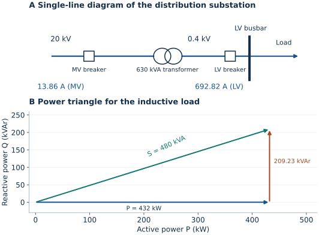
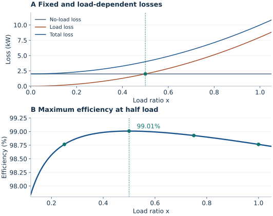
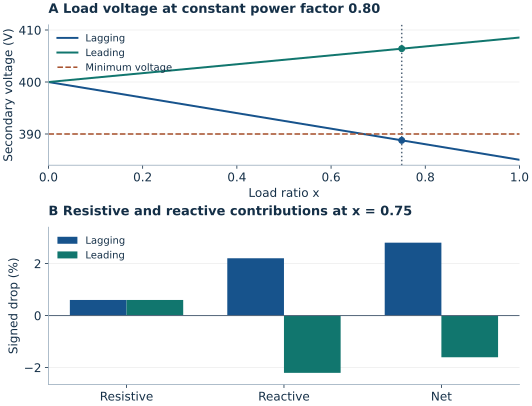
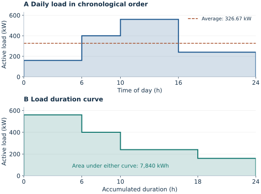
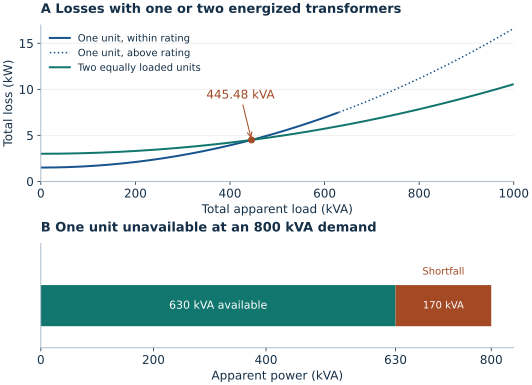

PART 3 | الجزء الثالث
Problems and Step-by-Step Solutions
مسائل وحلول خطوة بخطوة
Electrical Power Plants I | محطات الطاقة الكهربائية 1
1. Read a single-line diagram and calculate loading
1. قراءة المخطط أحادي الخط وحساب التحميل
A balanced three-phase distribution substation uses a 630 kVA, 20/0.4 kV transformer. The load draws 432 kW at a lagging power factor of 0.90. Treat the line-to-line voltages as nominal and neglect transformer losses and magnetizing current in the current calculations.
تغذي محطة توزيع ثلاثية الأطوار ومتوازنة حملا استطاعته الفعالة 432 kW عند معامل استطاعة 0.90 متأخر. القيم الاسمية للمحول 630 kVA و20/0.4 kV. استخدم التوترات الاسمية بين الأطوار، وأهمل ضياعات المحول وتيار المغنطة في حساب التيارات.
- Trace the supply path and calculate the apparent and reactive powers.
- Find the actual and rated line currents on both sides of the transformer.
- Find the loading ratio and the spare apparent-power capacity.
- تتبع مسار التغذية واحسب الاستطاعتين الظاهرية والردية.
- احسب تيار الخط الفعلي والاسمي على جانبي المحول.
- احسب نسبة التحميل والسعة الظاهرية المتبقية.
Step-by-step solution
الحل خطوة بخطوة

A. Single-line diagram. B. Power triangle of the load. MV and LV refer to medium and low voltage.
A. المخطط أحادي الخط. B. مثلث استطاعات الحمل. يشير الرمزان MV وLV إلى التوتر المتوسط والمنخفض.
1. Trace the supply path in panel A
1. تتبع مسار التغذية في اللوحة A
Start at the 20 kV incoming line. Follow the medium-voltage circuit breaker, transformer, low-voltage circuit breaker and busbar to the load. The single line represents the three balanced phases. Write the two line-to-line voltages on their respective sides of the transformer.
ابدأ عند خط الدخول 20 kV، ثم تتبع قاطع التوتر المتوسط فالمحول فقاطع التوتر المنخفض فقضيب التجميع وصولا إلى الحمل. يمثل الخط الواحد الأطوار الثلاثة المتوازنة. اكتب التوتر بين الأطوار عند كل جانب من المحول.
2. Draw the power triangle in panel B
2. ارسم مثلث الاستطاعات في اللوحة B
Draw P horizontally. Divide P by the power factor to obtain the hypotenuse S. For this inductive load draw Q upward. The unit kVAr denotes kilovolt-amperes reactive.
ارسم الاستطاعة الفعالة P أفقيا. اقسمها على معامل الاستطاعة لتحصل على الاستطاعة الظاهرية S، وهي وتر المثلث. ارسم الاستطاعة الردية Q نحو الأعلى لأن الحمل تحريضي. تدل وحدة kVAr على الكيلوفولط أمبير الردي.
3. Calculate both currents and label the diagram
3. احسب التيارين واكتبهما على المخطط
Use S = √3 U I. With S in kVA and line-to-line U in kV, the result is in amperes. For actual current use 480 kVA. For rated current use 630 kVA. Because the apparent power is taken as the same on the two sides, the lower-voltage side carries 50 times the current.
من علاقة الاستطاعة الظاهرية الثلاثية، يعطينا التعويض بالكيلوفولط أمبير والكيلوفولط تيار الخط بالأمبير. استخدم 480 kVA للتيار الفعلي و630 kVA للتيار الاسمي. لأننا نفترض تساوي الاستطاعة الظاهرية على الجانبين، يكون تيار الجانب المنخفض أكبر بخمسين مرة.
4. Compare the load with the rating
4. قارن الحمل بالسعة الاسمية
Divide apparent load by rated apparent power to obtain x, the loading ratio. The spare capacity is the difference between 630 and 480 kVA under the stated model.
اقسم الاستطاعة الظاهرية للحمل على الاستطاعة الظاهرية الاسمية لإيجاد نسبة التحميل x. الفرق بين القيمتين يعطي السعة المتبقية في نموذج المسألة.
2. Transformer losses and maximum efficiency
2. ضياعات المحول ونقطة المردود الأعظمي
A 1000 kVA transformer has 2 kW no-load loss and 8 kW load loss at rated current. The power factor is fixed at 0.80. Use the transformer loss model of Part 2.
محول استطاعته الاسمية 1000 kVA، وضياعات اللاحمل فيه 2 kW، وضياعات الحمل عند التيار الاسمي 8 kW. معامل الاستطاعة ثابت ويساوي 0.80. استخدم نموذج ضياعات المحول من الجزء الثاني.
- Calculate load loss, total loss, input power and efficiency at 25%, 50%, 75% and 100% load.
- Find maximum efficiency and explain its location using the curves.
- احسب ضياعات الحمل والضياعات الكلية والاستطاعة الداخلة والمردود عند تحميل 25% و50% و75% و100%.
- أوجد المردود الأعظمي وفسر موضعه باستخدام المنحنيات.
Step-by-step solution
الحل خطوة بخطوة

A. No-load, load and total losses. The intersection of the component losses marks the optimum. B. Efficiency as a function of load.
A. ضياعات اللاحمل والحمل والضياعات الكلية. يحدد تقاطع منحنيي الضياعات الجزئية التحميل الأمثل. B. المردود بدلالة نسبة التحميل.
1. Separate constant and variable losses
1. ميّز ضياعات اللاحمل عن ضياعات الحمل
Let x be S/Sn. The no-load component P₀ is constant in this model. The load component scales as the square of the current and becomes x²Pk, where Pk is the rated load loss. In panel A draw the fixed 2 kW line before plotting the two curves.
تمثل x نسبة الاستطاعة الظاهرية للحمل إلى الاسمية. ضياعات اللاحمل P₀ ثابتة في هذا النموذج، بينما تتناسب ضياعات الحمل مع مربع التيار. في اللوحة A ارسم الخط الثابت عند 2 kW أولا ثم منحنيي ضياعات الحمل والضياعات الكلية.
2. Complete one operating point before building the table
2. احسب نقطة تشغيل كاملة قبل إكمال الجدول
At x = 0.75, first convert the apparent load to active output by multiplying by the power factor. Add the losses to obtain input power. Divide output by input to obtain the efficiency.
عند x = 0.75، احسب أولا استطاعة الخرج الفعالة بضرب الاستطاعة الظاهرية بمعامل الاستطاعة. أضف الضياعات للحصول على الاستطاعة الداخلة، ثم اقسم الخرج على الدخل.
| Load ratioالتحميل | Load loss (kW)ضياعات الحمل | Total loss (kW)الضياعات الكلية | Input (kW)الاستطاعة الداخلة | Efficiencyالمردود |
|---|---|---|---|---|
| 0.25 | 0.50 | 2.50 | 202.50 | 98.77% |
| 0.50 | 2.00 | 4.00 | 404.00 | 99.01% |
| 0.75 | 4.50 | 6.50 | 606.50 | 98.93% |
| 1.00 | 8.00 | 10.00 | 810.00 | 98.77% |
3. Locate the optimum and verify it in panel B
3. حدد نقطة المردود الأعظمي وتحقق منها في اللوحة B
At fixed power factor, the loss-to-output ratio is proportional to P₀/x + Pk x. Its derivative is zero at P₀ = x²Pk, and its second derivative is positive for x > 0. Read x = 0.50 at the intersection in A and mark the efficiency maximum in B.
عند ثبات معامل الاستطاعة، تتناسب نسبة الضياعات إلى الخرج مع مجموع ضياعات اللاحمل مقسومة على التحميل وضياعات الحمل الاسمية مضروبة فيه. تساوي مشتقته الأولى صفرا عند تساوي مركبتي الضياعات، ومشتقته الثانية موجبة عند تحميل موجب. اقرأ نقطة التقاطع في اللوحة A، ثم حدد قمة المردود عند التحميل نفسه في اللوحة B.
3. Secondary voltage at lagging and leading power factor
3. التوتر الثانوي عند معامل استطاعة متأخر ومتقدم
A transformer is rated at 800 kVA. Its no-load secondary line-to-line voltage at a fixed tap is 400 V. Its short-circuit impedance is 5.00% and its load losses at rated current are 8.00 kW. At a load ratio of 0.75, compare a power factor of 0.80 lagging with 0.80 leading. Use the approximate voltage-drop relation and a specified minimum secondary voltage of 390 V.
محول استطاعته الاسمية 800 kVA، وتوتره الثانوي بين الأطوار عند اللاحمل ومأخذ ثابت 400 V. معاوقة القصر 5.00% وضياعات الحمل عند التيار الاسمي 8.00 kW. عند نسبة تحميل 0.75، قارن معامل استطاعة 0.80 متأخرا مع القيمة نفسها متقدمة. استخدم علاقة هبوط التوتر التقريبية وحدا أدنى معطى مقداره 390 V.
- Find the resistive and reactive impedance components in percent.
- Calculate the signed drop, the secondary voltage and compliance with the given minimum in both cases.
- احسب مركبتي المقاومة والمفاعلة بالنسبة المئوية.
- احسب هبوط التوتر بإشارته والتوتر الثانوي، وتحقق من الحد الأدنى في الحالتين.
Step-by-step solution
الحل خطوة بخطوة

A. Secondary voltage versus load ratio. B. Signed contributions to the voltage drop at x = 0.75.
A. التوتر الثانوي بدلالة التحميل. B. مساهمة المقاومة والمفاعلة في هبوط التوتر مع إشارة كل منهما عند تحميل 0.75.
1. Resolve the short-circuit impedance
1. حلل معاوقة القصر إلى مركبتيها
At rated current, the resistive percentage r is 100 times rated load loss divided by rated apparent power, with matching prefixes. The magnitude z combines resistance and reactance by the Pythagorean relation. The label q denotes the reactance in percent.
عند التيار الاسمي، نحسب المقاومة المئوية r% من قسمة ضياعات الحمل الاسمية على الاستطاعة الظاهرية الاسمية وضرب الناتج في 100. ثم نستخرج المفاعلة المئوية q% من مقدار المعاوقة z% باستخدام فيثاغورس.
2. Calculate the two signed drops and draw panel B
2. احسب الهبوط بإشارته وارسم اللوحة B
The absolute sine of the power-factor angle is 0.60. The resistive contribution is +0.60 percentage points in both cases. The reactive contribution is positive for the lagging load and negative for the leading load. Add the two contributions algebraically to obtain the net bar.
القيمة المطلقة لجيب زاوية معامل الاستطاعة تساوي 0.60. مساهمة المقاومة موجبة وتساوي 0.60 نقطة مئوية في الحالتين. مساهمة المفاعلة موجبة للحمل المتأخر وسالبة للحمل المتقدم. اجمع المساهمتين جبريا لرسم عمود الهبوط الكلي.
3. Convert the drops to voltages and read panel A
3. حوّل الهبوط إلى توتر واقرأ اللوحة A
Start both curves at 400 V at zero load. At x = 0.75 the lagging curve lies below the 390 V limit. For leading power factor the signed drop is negative, so the secondary voltage rises above the no-load value and satisfies the stated minimum.
ابدأ المنحنيين عند 400 V في حالة اللاحمل. عند تحميل 0.75 يقع منحنى الحمل المتأخر تحت الحد الأدنى 390 V. في الحالة المتقدمة يكون الهبوط سالبا، فيرتفع التوتر فوق قيمة اللاحمل ويحقق الحد الأدنى المعطى.
4. Daily load, load-duration curve and energy efficiency
4. الحمل اليومي ومنحنى مدة الحمل ومردود الطاقة
An 800 kVA transformer supplies four constant-power intervals over a day. The active loads are 160 kW from 00:00 to 06:00, 400 kW from 06:00 to 10:00, 560 kW from 10:00 to 16:00 and 240 kW from 16:00 to 24:00. The power factor is 0.80 throughout. The no-load loss is 1.60 kW and the rated load loss is 8.00 kW. The transformer remains energized all day.
يغذي محول استطاعته الاسمية 800 kVA حملا يوميا يتألف من أربع فترات ثابتة. الاستطاعات الفعالة هي 160 kW من 00:00 إلى 06:00، و400 kW حتى 10:00، و560 kW حتى 16:00، و240 kW حتى 24:00. معامل الاستطاعة 0.80 في الفترات كلها. ضياعات اللاحمل 1.60 kW وضياعات الحمل الاسمية 8.00 kW، ويبقى المحول تحت التوتر طوال اليوم.
- Draw the chronological load and load-duration curves.
- Find delivered energy, mean load, and load factor.
- Find the daily loss energy and energy efficiency.
- ارسم منحنى الحمل اليومي ومنحنى مدة الحمل.
- احسب الطاقة المسلمة والحمل المتوسط وعامل الحمل.
- احسب طاقة الضياعات اليومية ومردود الطاقة.
Step-by-step solution
الحل خطوة بخطوة

A. Chronological daily load. B. The same blocks sorted in descending load order.
A. الحمل اليومي بترتيبه الزمني. B. مستطيلات الحمل نفسها مرتبة تنازليا بحسب الاستطاعة.
1. Build the two step curves
1. ارسم المنحنيين المتدرجين
In A, use block widths of 6, 4, 6 and 8 h in chronological order. In B, sort the heights as 560, 400, 240 and 160 kW and carry the respective widths 6, 4, 8 and 6 h with them. The accumulated endpoints are therefore 0, 6, 10, 18 and 24 h.
في A، ارسم مستطيلات بعروض 6 و4 و6 و8 ساعات وفق ترتيب الفترات الزمنية. في B، رتب الاستطاعات تنازليا إلى 560 ثم 400 ثم 240 ثم 160 كيلوواط، وانقل مدة كل مستوى معه. تصبح الحدود التراكمية 0 و6 و10 و18 و24 ساعة.
2. Sum the areas and compute the load factor
2. اجمع المساحات واحسب عامل الحمل
Multiply the height of each block by its duration. Sorting the blocks preserves their areas. Divide total delivered energy by 24 h to obtain the average and divide the average by the 560 kW peak to obtain the load factor.
اضرب ارتفاع كل مستطيل في عرضه. يبقى مجموع المساحات ثابتا بعد ترتيب المستطيلات. اقسم الطاقة المسلمة على 24 ساعة لحساب الحمل المتوسط، ثم اقسمه على الحمل الأعظمي 560 kW لحساب عامل الحمل.
3. Compute the losses interval by interval
3. احسب الضياعات في كل فترة على حدة
At the given power factor, 800 kVA corresponds to 640 kW at rated load. Therefore x = P/640 in each interval. For the first interval, x = 0.25, so the loss energy is (1.60 + 8 × 0.25²) × 6 = 12.60 kWh. Repeat before summing. Squaring the average loading would not preserve the contribution of the load peaks.
عند معامل الاستطاعة المعطى تقابل الاستطاعة الاسمية 800 kVA استطاعة فعالة 640 kW. لذلك تحسب نسبة التحميل في كل فترة بقسمة الحمل الفعال على 640 kW. في الفترة الأولى يكون التحميل 0.25، فتبلغ طاقة الضياعات 12.60 kWh. كرر الحساب لكل فترة قبل الجمع، لأن ضياعات الحمل تتناسب مع مربع نسبة التحميل.
4. Close the daily energy balance
4. تحقق من توازن الطاقة اليومية
Add delivered energy and loss energy to obtain input energy. The energy efficiency is the ratio of delivered energy to input energy over the full day.
اجمع الطاقة المسلمة وطاقة الضياعات لحساب الطاقة الداخلة. المردود الطاقي هو نسبة مجموع الطاقة المسلمة إلى مجموع الطاقة الداخلة خلال اليوم.
5. Parallel transformers, minimum loss and backup capacity
5. المحولات المتوازية والضياعات الدنيا وسعة الاحتياط
Two identical 630 kVA transformers can supply a common load. An energized unit has a 1.50 kW no-load loss and a 6.00 kW load loss at rated current. Assume equal load sharing with both units energized, zero loss in a de-energized standby unit and no operation above rating.
يغذي محولان متماثلان، سعة كل منهما 630 kVA، حملا مشتركا. ضياعات اللاحمل للمحول الموصول 1.50 kW وضياعات الحمل عند التيار الاسمي 6.00 kW. افترض تقاسم الحمل بالتساوي عند تشغيل المحولين، وانعدام الضياعات في المحول الاحتياطي المفصول، واعمل ضمن السعة الاسمية لكل محول.
- Find the apparent load at which the two operating modes have equal losses.
- Compare operation at 350, 600 and 800 kVA. Choose the feasible mode with minimum losses in each case.
- At 800 kVA, find the spare-capacity shortfall if one unit becomes unavailable.
- احسب الاستطاعة الظاهرية التي تتساوى عندها ضياعات نمطي التشغيل.
- قارن التشغيل عند 350 و600 و800 كيلوفولط أمبير. اختر نمط التشغيل الممكن والأقل ضياعات في كل حالة.
- عند حمل 800 كيلوفولط أمبير، احسب عجز سعة التغذية عند خروج أحد المحولين من الخدمة.
Step-by-step solution
الحل خطوة بخطوة

A. Loss comparison. The dotted one-unit curve represents a mathematical extension above its rating. B. Available capacity and shortfall when one unit is unavailable.
A. مقارنة الضياعات. يمثل الجزء المنقط من منحنى المحول الواحد امتدادا حسابيا فوق السعة الاسمية. B. السعة المتاحة والعجز عند خروج محول واحد.
1. Write the two operating models
1. اكتب نموذجي التشغيل
Let S be total apparent load in kVA and x = S/630. One online unit carries x. When both are online, each carries x/2. Count the no-load loss for every energized unit, then sum its squared-current loss.
لتكن S الاستطاعة الظاهرية الكلية وx = S/630. يتحمل المحول الوحيد نسبة التحميل كلها، ويأخذ كل محول نصفها عند تشغيل المحولين. احسب ضياعات اللاحمل لكل محول موصول، ثم أضف ضياعات الحمل التي تعتمد على مربع تياره.
2. Solve for the intersection in panel A
2. احسب نقطة التقاطع في اللوحة A
Equate the two loss expressions. The intersection is within the rating of one unit, so both modes are feasible there. Below the intersection, one unit has lower loss. Above it, two units have lower loss.
ساوِ معادلتي الضياعات. تقع نقطة التقاطع ضمن السعة الاسمية لمحول واحد، لذا يمكن تشغيل أي من النمطين عندها. عند حمل أقل من قيمة التقاطع تكون ضياعات المحول الواحد أقل، وفوقها تكون ضياعات المحولين أقل.
3. Check capacity before comparing losses
3. تحقق من السعة قبل مقارنة الضياعات
At 350 kVA, one unit is feasible and has lower losses. At 600 kVA, both modes are feasible, and two units save about 1.22 kW. At 800 kVA, each of the two units carries 400 kVA. A single unit would exceed its 630 kVA rating, so its dotted curve is excluded from the operating decision.
عند 350 kVA يمكن استخدام محول واحد وتكون ضياعاته أقل. عند 600 kVA يمكن استخدام أي من النمطين، ويوفر تشغيل المحولين نحو 1.22 kW من الضياعات. عند 800 kVA يحمل كل محول 400 kVA. يتجاوز حمل المحول الواحد سعته الاسمية في هذه الحالة، ولذلك يستبعد امتداد منحناه من قرار التشغيل.
| Load (kVA)الحمل | One unit (kW)محول واحد | Two units (kW)محولان | Selected modeالاختيار |
|---|---|---|---|
| 350 | 3.35 | 3.93 | Oneواحد |
| 600 | 6.94 | 5.72 | Twoاثنان |
| 800 | Above ratingفوق السعة | 7.84 | Twoاثنان |
4. Check the contingency in panel B
4. احسب العجز عند خروج أحد المحولين في اللوحة B
When one unit is unavailable, the remaining unit can supply up to 630 kVA under the problem assumptions. Subtract this capacity from the 800 kVA demand. In panel B the first part of the bar is the available capacity and the second is the shortfall.
عند خروج أحد المحولين من الخدمة، يستطيع المحول المتبقي تغذية حمل حتى 630 kVA وفق فرضيات المسألة. اطرح هذه السعة من الطلب. في اللوحة B يمثل الجزء الأول من الشريط السعة المتاحة، ويمثل الجزء الثاني العجز.